Activity: Constructing a base feature using contour flange
Click here to download the activity files.
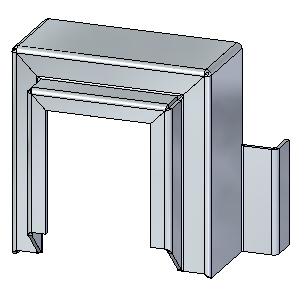
Objectives
This activity demonstrates how a contour flange can be used to create a base feature. In this activity you will accomplish the following:
-
Create a new sheet metal part.
-
Create the material to be used for the part.
-
Modify the thickness of the material.
-
Create a sketch that will be the basis for the contour flange.
-
Examine the PathFinder and understand how a contour flange is defined.
Open contour_actvity_1.psm.
On the File menu, click Save As→Save As.
On the Save As dialog box, in the File box, save the part to a new name or location so that other users can complete this activity.
Click the Home tab→Sheet Metal group→Contour Flange command.
Select the sketch shown, then click the flange handle.
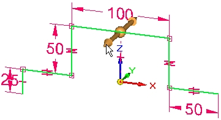
Click the symmetric extent option.
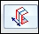
Use the tab key to change focus between the material thickness field and the extent field. Set the material thickness to be 3.25 mm and the extent to be 120.00 mm, and then press the enter key to complete the contour flange.
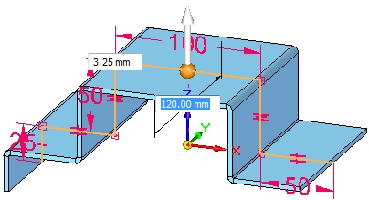
The results are shown.
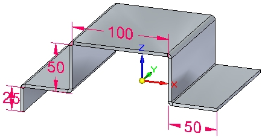
The base feature can be created from a contour flange. Tangent curves in sketches are used to create bends.
Observe PathFinder by moving the cursor over the features.
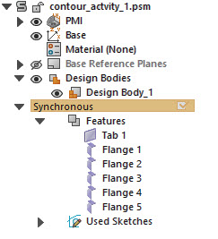
The tab is created from the element chosen. Connected lines and tangent curves create flanges.
Save and close the sheet metal document.
Open contour_actvity_2.psm.
Lock the sketch plane to the plane shown.
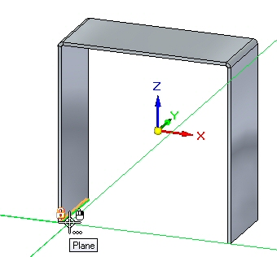
Create the sketch shown. All segments are 20.00 mm.
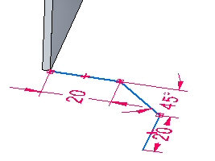
Select the Contour Flange command.
Select the handle shown.
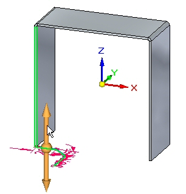
Continue by selecting the adjacent edge shown.
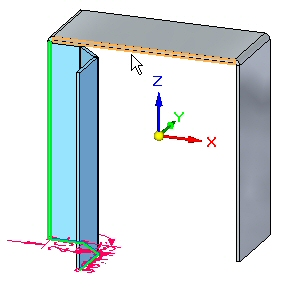
Continue by selecting the adjacent edge shown.
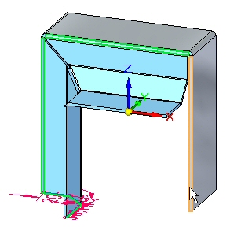
The preview is shown.
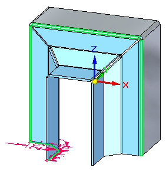
Right-click to complete the contour flange.
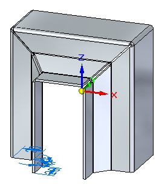
Observe PathFinder by moving the cursor over the features.
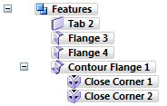
The contour flange is a single feature. The corner conditions can be edited.
In PathFinder, right-click the contour flange feature, and then click separate. Observe the results.
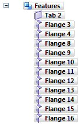
The flange numbers in PathFinder may not match the numbers in the image above. This is not a problem.
Notice that the contour flange feature was replaced by individual flanges. As a result, there is no associativity between the flanges, but you can edit the individual flanges independently of one another.
Save and close the sheet metal document.
Open contour_actvity_3.psm.
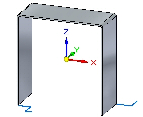
Select the Contour Flange command.
In the following steps you will change the options for end conditions on the contour flange and view the end conditions in the preview without accepting until the last step.
Begin the contour flange shown using the default parameters.
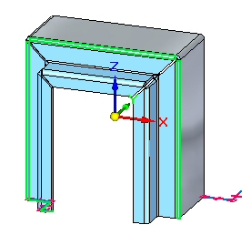
Click the Options button.
On the Miters and Corners tab, set the Miter option for the Start End and Finish End. Set each angle to –30o, then click OK. Observe the results.
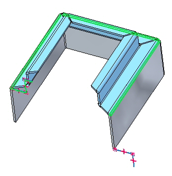
The view has been rotated for clarity.
Click the Options button.
On the Miters and Corners tab, change the start end and finish end miter angles from a negative value to 30o, then click OK. Observe the results.
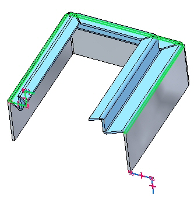
Click the Options button.
On the Miters and Corners tab, for both the start end and finish end miter options, set the Normal to Source Face option, then click OK. Observe the results.
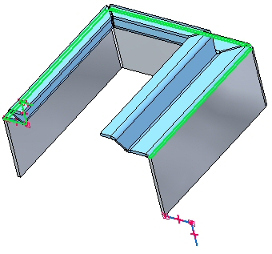
Click the Options button.
Click the Miters and Corners tab.
On the Miters and Corners tab, for both the start end and finish end miter options, set the miter angle to –45o. Then click OK. Observe the results.
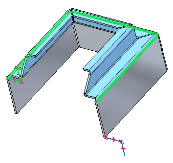
Click the Options button.
On the Miters and Corners tab, in the Interior Corners section, set the Close Corner option. Set the Treatment option to Circular Cutout and click OK. Observe the result.
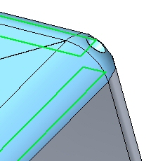
Right-click to complete the contour flange. The result is shown.
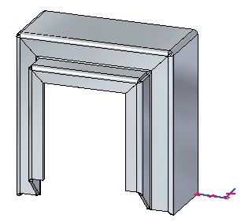
Select the Contour Flange command.
Select the sketch as shown.
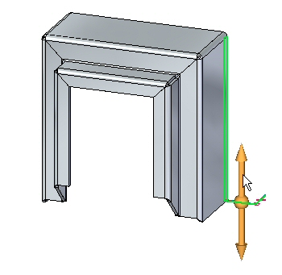
Click the Partial Contour Flange option.
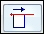
Position the cursor approximately as shown, then click.
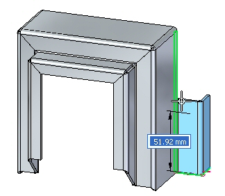
The result is shown.
Partial flanges can be further positioned by moving thickness faces or with dimensions.
This completes the activity.
In this activity you set the material thickness and extent to create a base feature using a contour flange. The components of the contour flange were examined and manipulated. Options for the construction of end conditions were explored, and a partial contour flange was placed.
-
Click the Close button in the upper- right corner of this activity window.
Answer the following questions:
-
How can you make a base feature using the contour flange command?
-
Can a part edge be used to define the extent of a contour flange and if so, can an adjacent edge be used to continue the extent?
-
What does the miter option do when used in the creation of a contour flange?